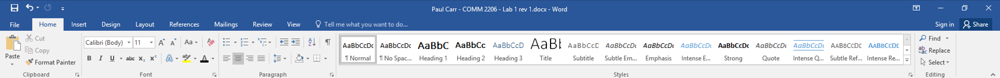
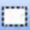
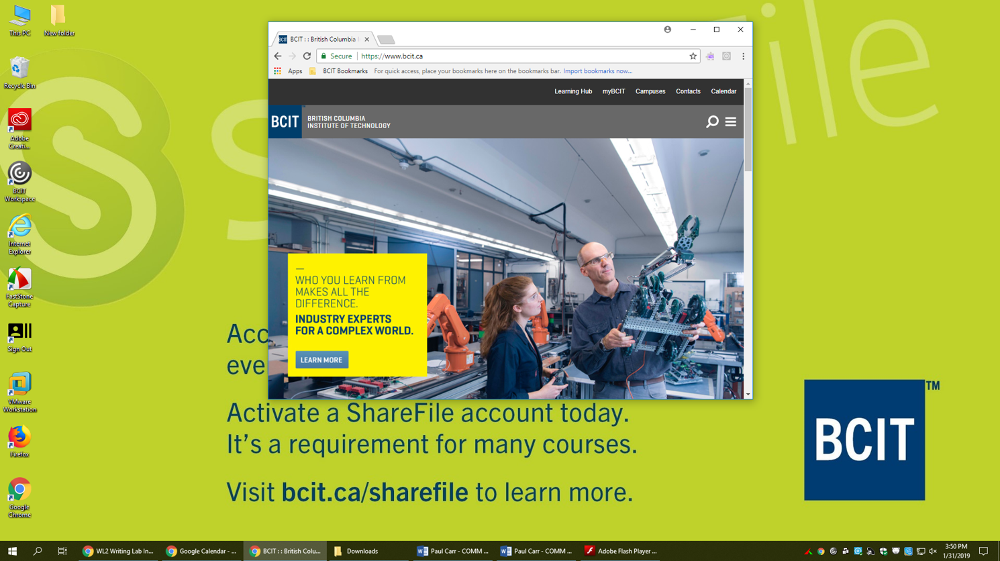

I needed to quickly test and document the operation of an unfamiliar software product. This documentation enables novice users to easily find, understand, and act upon instructions for capturing screenshots with the product.
How I Wrote These Instructions
I tested the product and documented my findings as a set of organized, repeatable instructions:
I divided each screen capture function into its own set of instructions to simplify and streamline information delivery.
I chunked content with headings, lists, and note boxes so users can quickly locate and absorb the information they need.
I limited each function to a manageable set of steps.
I established a consistent structure for each function:
Subheadings identify each function.
Numbered lists highlight instructions.
Each list item contains only one step.
Supplementary information appears separate from the listed steps.
I included screenshots to highlight interface elements and illustrate outcomes.
Left-click on the Capture Active Window button on the FastStone Capture toolbar to capture the window. (See Figure 1.)
Note
The captured screenshot crops everything outside of the active window.
Figure 1: Screenshot of an active window.
Capturing Windows and Objects
You can select and capture windows or objects within windows:
Left-click on the Capture Window / Object button on the FastStone Capture toolbar.
Hover the pointer over a window or over an object within a window to highlight that window or object with a red frame.
Choose from the following options:
Left-click to capture the highlighted window or object. (See Figure 2.)
or
Hold Ctrl and left-click on multiple windows or objects to select them all.
and
Hold Shift to focus on the highlighted windows or objects.
or
Press Enter to capture the highlighted windows or objects. (See Figure 2.)
or
Press Esc to cancel your selection.
Figure 2: Screenshot of an object within a window.
Capturing Rectangular Regions
You can select and capture rectangular regions of your screen:
Left-click on the Capture Rectangular Region  button on the FastStone Capture toolbar.
Left-click and drag the crosshairs pointer to draw a rectangle over the region of the screen you wish to capture.
Release the left mouse button to capture the region. (See Figure 3.)
Figure 3: Screenshot of a rectangular region of your screen.
Capturing Freehand Regions
You can select and capture freehand regions of your screen:
Left-click on the Capture Freehand Region button on the FastStone Capture toolbar.
Left-click and begin dragging the lasso pointer.
Continue dragging the lasso pointer to draw a selection around the region of the screen you wish to capture.
While still dragging, connect the lasso pointer to the starting point of the selection to capture the freehand region. (See Figure 4).
Figure 4: Screenshot of a freehand region of your screen.
Capturing Full Screens
You can capture everything visible on your screen:
Left-click on the Capture Full Screen button on the FastStone Capture toolbar to capture everything on your screen. (See Figure 5.)
Caution
This captures a screenshot of the entire desktop:
all visible windows
the desktop wallpaper (if visible)
the Windows task bar (if visible)
Figure 5: Screenshot of a full screen.
Capturing Scrolling Windows
You can select and capture regions of windows that extend below what is visible on screen:
Left-click on the Capture Scrolling Window button on the FastStone Capture toolbar.
Hover the pointer over a window to highlight that window with a red frame.
Note
The highlighted window must contain content that requires downward scrolling to fully view.
Choose from the following options:
Auto Scroll Mode
Left-click to capture the highlighted window. (See Figure 6.)
Note
FastStone Capture will automatically scroll to the bottom of the window's content and compose a single screenshot of that content.
Custom Scroll Mode
Hold Ctrl and the left mouse button to begin dragging the crosshairs pointer within the highlighted window.
Drag the crosshairs pointer to draw a rectangular selection marking the left, top, and right edges of the region you want capture within the highlighted window.
Note
You can place the bottom edge of the selection anywhere within the highlighted window. In the next step, the bottom edge will begin expanding downwards.
Left-click the down scroll arrow on the scroll bar of the highlighted window to begin expanding the selection downwards.
Note
FastStone Capture expands the selection downwards by scrolling toward the bottom of the highlighted window's content.
Press Esc when you want to stop scrolling and capture the selected region. (See Figure 6.)
button on the FastStone Capture toolbar.